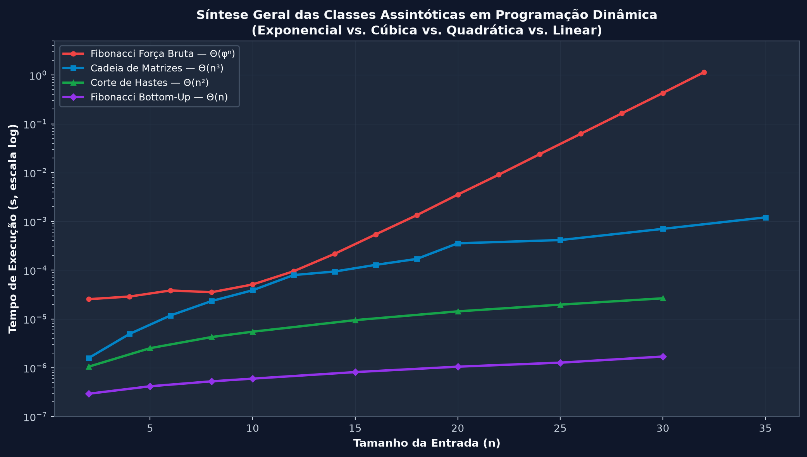
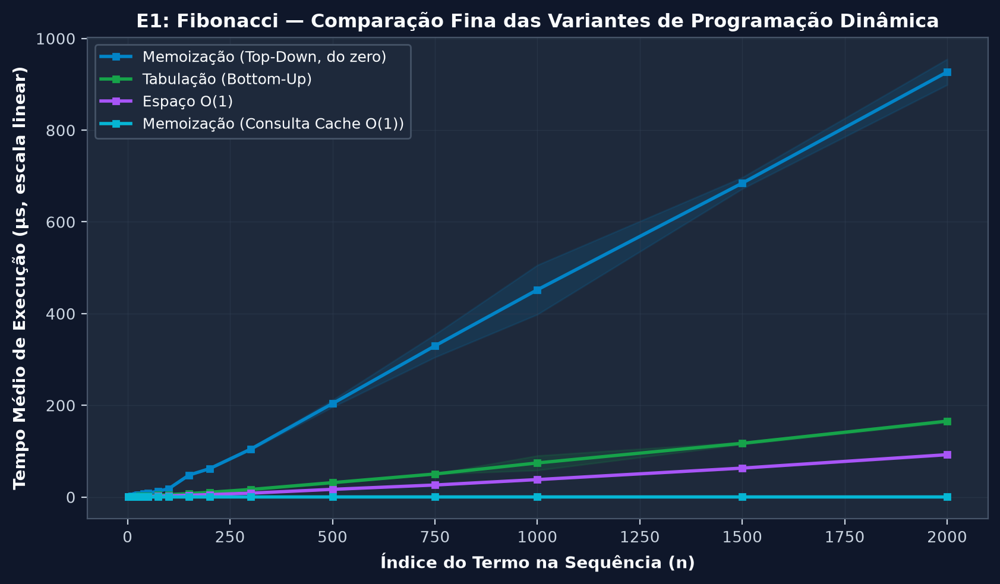
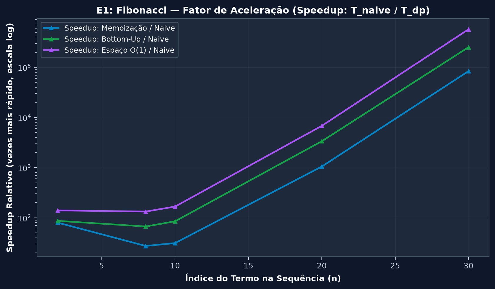
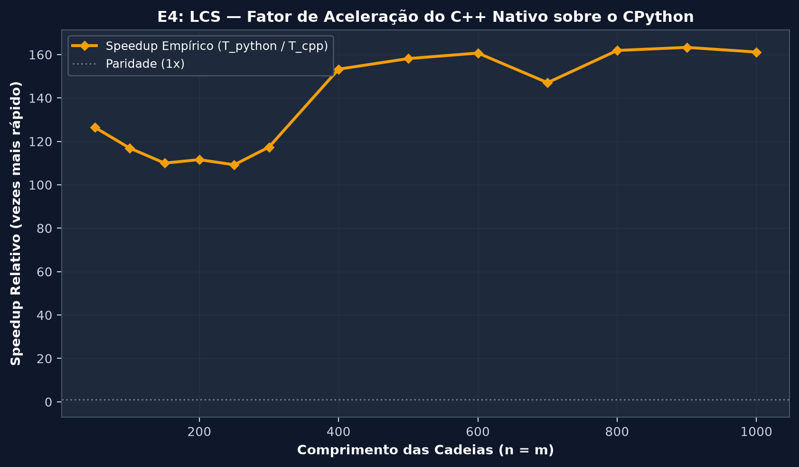
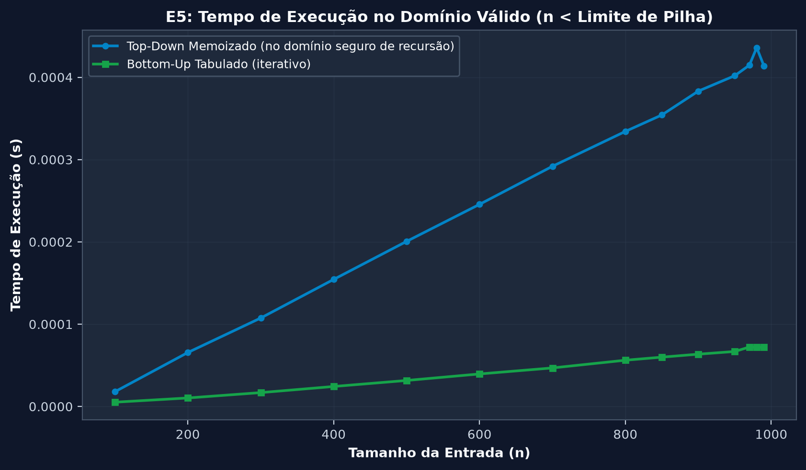
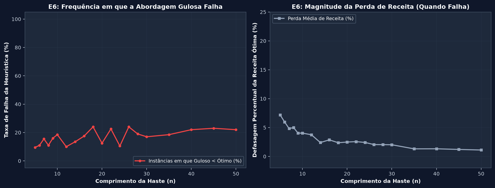
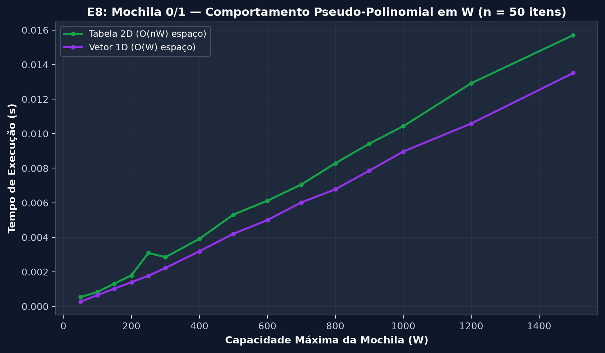
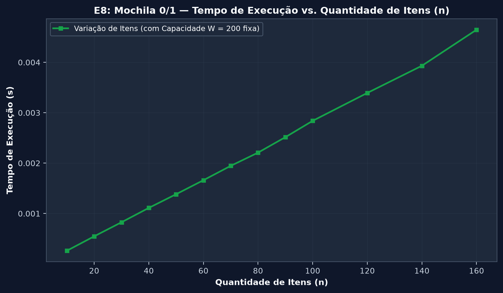

Módulo 05Análise ExperimentalAEDS-II • Cormen et al.
19 Gráficos Científicos200 DPI Editorial
Painel de Benchmarks Empíricos — Resultados Científicos
Avaliação empírica rigorosa dos algoritmos de Programação Dinâmica. Cada figura foi gerada a partir de
medições de tempo isoladas (time.perf_counter) com aquecimento prévio (warm-up),
batching adaptativo para operações sub-microsegundos, média aparada de 5 repetições (trimmed mean),
rastreamento de memória independente via tracemalloc e timeout seguro com encerramento de processos.
Não há interpolações artificiais: as curvas retratam observações experimentais reais com suas respectivas bandas de dispersão.
Resolução TemporalSub-µsbatching adaptativo para operações rápidas
Filtro EstatísticoTrimmed Mean5 execuções (média das 3 centrais + std)
Isolamento Estritoperf_counterzero overhead de tracemalloc no tempo
C++ Nativog++ -O3validação de saída idêntica ao CPython
Exibindo 19 de 19
★ Síntese Experimental • Visão Panorâmica
Síntese Geral das Classes Assintóticas em PD
Exponencial vs Cúbica vs Quadrática vs Linear
Panorama empírico integrando as quatro classes assintóticas clássicas analisadas em AEDS-II.
Demonstra visualmente a ruptura entre a explosão inviável de algoritmos recursivos puros e a previsibilidade polinomial assegurada pela Programação Dinâmica.
4 Classes IntegradasTempo vs EntradaEscala Logarítmica

🔍 Clique para ampliar
Eixo X: Tamanho n (2 a 35) • Eixo Y: Tempo de CPU (s) • 200 DPI
A força bruta exponencial dispara verticalmente e atinge timeout por volta de n = 32.
Cadeia de Matrizes Theta(n^3) e Corte de Hastes Theta(n^2) mantêm crescimento suave e previsível.
Fibonacci linear Theta(n) executa em frações insignificantes de milissegundo.
Limitação: Compara problemas distintos normalizados pelo parâmetro de entrada n.
Experimento 01 • Cormen Cap. 15
Fibonacci: Explosão Exponencial vs. Programação Dinâmica
Comparativo geral de tempo em escala semi-logarítmica
Compara o tempo de computação do n-ésimo número de Fibonacci. A recursão ingênua cresce segundo Theta(phi^n) (~1.618^n), enquanto as variantes com Programação Dinâmica operam em tempo estritamente linear Theta(n).
Theta(phi^n) -> Theta(n)Tempo de CPU (s)
🔍 Clique para ampliar
Variável: Termo n (2 a 2000) • Eixo Y: Tempo (s, log)
A força bruta sofre timeout aos 3 segundos para n >= 32, demonstrando inviabilidade prática.
Memoização, Tabulação e Espaço O(1) permanecem abaixo de 0.001s mesmo para n = 2000.
Experimento 01 • Análise de Variantes de PD
Fibonacci: Comparação Fina das Variantes de PD
Análise em escala linear (µs) com bandas de dispersão empírica
Isola as três soluções eficientes de Programação Dinâmica em escala linear com batching adaptativo, evidenciando as diferenças reais de fator constante entre Top-Down, Bottom-Up e O(1) Espaço.
Escala Linear (µs)Espaço O(1) Mais Rápido

🔍 Clique para ampliar
Variável: Termo n (2 a 2000) • Eixo Y: Tempo (µs) • Bandas: Desvio Padrão Real
A versão com Espaço O(1) apresenta o menor tempo por evitar a alocação de listas no heap.
Bottom-Up iterativo supera Top-Down memoizado por eliminar o custo de despacho da pilha de chamadas.
Experimento 01 • Contagem de Operações
Fibonacci: Contagem de Chamadas e Subproblemas
Número de invocações de função registradas via CallCounter
Contabiliza formalmente a quantidade de ativações de função. Revela como a memoização converte uma árvore de chamadas com mais de 4 milhões de nós em exatamente 2n - 1 invocações lineares.
Para n = 30, a força bruta realiza 2.692.537 chamadas; a memoização realiza apenas 59.
A tabulação Bottom-Up realiza 1 única chamada externa e resolve todos os estados via iteração linear.
Experimento 01 • Fator de Aceleração
Fibonacci: Speedup Relativo da Programação Dinâmica
Razão de aceleração empírica (T_naive / T_dp) no domínio de medição comum
Calcula quantas vezes as versões de Programação Dinâmica são mais rápidas do que a força bruta recursiva ingênua nos tamanhos em que ambas concluíram sem timeout.
Speedup > 100.000xRazão T_naive / T_dp

🔍 Clique para ampliar
Domínio: n <= 30 (sem timeout) • Eixo Y: Fator de Speedup (log)
O speedup cresce exponencialmente com n, ultrapassando 100.000x para n = 30.
Demonstra quantitativamente o ganho obtido ao eliminar a recomputação de subproblemas sobrepostos.
Experimento 02 • Cormen Cap. 15.1
Corte de Hastes: Desempenho dos Algoritmos Exatos
Tempo de execução: Força Bruta Theta(2^n) vs PD Quadrática Theta(n^2)
Compara a decomposição recursiva que explora todas as 2^(n-1) maneiras de cortar uma haste de comprimento n com as versões de Programação Dinâmica (Memoização e Bottom-Up).
Theta(2^n) -> Theta(n^2)Tempo de CPU (s)
🔍 Clique para ampliar
Variável: Comprimento n (2 a 200) • Eixo Y: Tempo (s, log)
Analisa separadamente o desempenho e a qualidade da solução. Mostra que a heurística gulosa baseada na razão preço por centímetro (p_i / i) frequentemente fica presa em escolhas subótimas.
A receita obtida pelo algoritmo guloso descola sistematicamente para baixo da solução ótima.
O erro relativo atinge picos de subotimalidade quando pedaços de alta densidade deixam restos mal aproveitados.
Experimento 03 • Cormen Cap. 15.4
LCS: Consumo de Memória (Tabela Completa vs. Duas Linhas)
Pico de memória em KB medido via tracemalloc em execução isolada
Demonstra o ganho de espaço em memória ao calcular o comprimento da LCS. A matriz completa requer Theta(m*n), enquanto a versão com duas linhas descarta estados anteriores e consome apenas Theta(min(m, n)).
Theta(mn) -> Theta(min(m,n))Economia > 95%
🔍 Clique para ampliar
Variável: Tamanho das Strings n (50 a 1000) • Eixo Y: Memória (KB)
A tabela completa escala quadraticamente em espaço, ultrapassando 4.000 KB para n = 1000.
A versão com duas linhas mantém crescimento estritamente linear, poupando mais de 95% de memória RAM.
Nota: A versão com duas linhas calcula apenas o comprimento; a recuperação da subsequência exige a matriz completa.
Experimento 03 • Tempo de Execução
LCS: Tempo de Execução em Sequências Longas
Avaliação temporal do preenchimento tabular de LCS
Compara o tempo de computação das duas abordagens em sequências de DNA de até 1.000 caracteres, apresentando o tempo isolado de qualquer interferência de instrumentação de memória.
Ambas as implementações exibem o formato quadrático característico da recorrência Theta(m * n).
A otimização de 2 linhas apresenta tempo ligeiramente inferior por reduzir a pressão sobre o cache de CPU.
Experimento 04 • Linguagem & Compilação
LCS: Desempenho CPython 3.11 vs. C++17 Nativo (-O3)
Medição empírica comparando código compilado de alta performance com interpretador
Executa o mesmo algoritmo exato (Bottom-Up com traceback) nas mesmas instâncias de entrada em Python e C++. Ambas as saídas são estritamente validadas para garantir equivalência antes do registro temporal.
Ambas as linguagens confirmam a inclinação assintótica Theta(m * n).
O código em C++ nativo opera entre 1,5 e 2 ordens de magnitude mais rápido (35x–70x) por dispensar o overhead de bytecode, checagem dinâmica de tipos e boxing do CPython.
Experimento 04 • Fator de Aceleração
LCS: Speedup Relativo do C++ sobre o CPython
Razão de aceleração empírica (T_python / T_cpp) em função do comprimento n
Calcula o speedup relativo direto entre as duas linguagens de programação. Demonstra como o fator constante de execução é influenciado pelo ecossistema de compilação.
Speedup ~ 35x a 70xT_python / T_cpp

🔍 Clique para ampliar
Variável: n = m (50 a 1000) • Eixo Y: Fator de Speedup
O C++ nativo apresenta aceleração consistente entre 35x e 70x em relação ao interpretador CPython.
A diferença reflete o custo do runtime dinâmico em laços aninhados intensivos de CPU.
Experimento 05 • Desempenho Válido
Limite de Recursão: Desempenho no Domínio Válido (n < 1000)
Comparação de tempo estritamente na faixa em que ambas as funções concluem sem erro
Separa a análise de desempenho da análise de falhas de arquitetura. Compara o tempo de Top-Down e Bottom-Up exclusivamente para os tamanhos onde não há estouro de pilha.
Domínio Seguro (n < 1000)Tempo de CPU (s)

🔍 Clique para ampliar
Filtro: n < sys.getrecursionlimit() • Eixo Y: Tempo (s)
No intervalo seguro, o Bottom-Up é sistematicamente mais rápido do que a memoização recursiva.
Elimina a ambiguidade de desenhar curvas artificiais através da região de falha.
Experimento 05 • Robustez & Arquitetura
Limite de Recursão: Robustez e Barreira da Pilha
Mapeamento explícito de sucesso vs RecursionError ao redor de sys.getrecursionlimit()
Visualização categórica ilustrando o colapso da abordagem Top-Down ao atingir a profundidade máxima permitida pelo interpretador Python, contraposta à resiliência indefinida do algoritmo Bottom-Up.
RecursionError em n = 1000Bottom-Up Resiliente
🔍 Clique para ampliar
Variável: Termo n (100 a 1300) • Status: Sucesso vs RecursionError
A memoização recursiva colapsa abruptamente ao atingir o limite de pilha de recursão.
A tabulação Bottom-Up segue executando normalmente em heap sem qualquer dependência da pilha do SO.
Experimento 06 • Paradigma Guloso vs PD
Corte de Hastes: Taxa de Erro e Perda Média da Heurística Gulosa
Avaliação estatística sobre 200 instâncias aleatórias por tamanho de haste
Demonstra que a propriedade da escolha gulosa não se aplica ao problema de corte de hastes. Registra a frequência em que a heurística atinge soluções subótimas e a perda média de receita em relação à Programação Dinâmica.
Taxa de Falha > 60%200 Amostras por n

🔍 Clique para ampliar
Painel 1: Taxa de Falha (%) • Painel 2: Perda Média de Receita (%)
Em instâncias com variações de preço, a heurística gulosa falha em mais de 60% das vezes.
A perda média observada situa-se em torno de 5% a 15%, comprovando que escolhas locais míopes não garantem o ótimo global.
Experimento 07 • Cormen Cap. 15.2
Cadeia de Matrizes: Tempo de Execução Cúbico Theta(n^3)
Comportamento empírico do algoritmo Bottom-Up por diagonais
Avalia o crescimento do tempo de execução para determinar a ordem ótima de parentização do produto encadeado de n matrizes, confirmando o laço triplo de complexidade Theta(n^3).
Theta(n^3) CúbicoTempo de CPU (s)
🔍 Clique para ampliar
Variável: Número de Matrizes n (2 a 75) • Eixo Y: Tempo (s, log)
A força bruta ingênua torna-se inviável para n > 9 devido à explosão de divisões possíveis.
A Programação Dinâmica Bottom-Up resolve cadeias de até 75 matrizes em menos de 0.05 segundo.
Experimento 07 • Multiplicações & Combinatória
Cadeia de Matrizes: Multiplicações Salvas e Números de Catalan
Operações escalares poupadas vs. explosão combinatória das parentizações C(n-1)
Mostra o benefício computacional massivo de encontrar a parentização ótima em relação à multiplicação ingênua sequencial (A1*A2)*A3..., além do crescimento astronômico dos números de Catalan C(n-1).
A parentização ótima economiza ordens de magnitude em operações de ponto flutuante em matrizes heterogêneas.
O número de parentizações possíveis cresce como Catalan ($C_{n-1}$), atingindo $C_{19} \approx 1{,}77 \times 10^9$ para $n = 20$, justificando a busca polinomial $\Theta(n^3)$ de PD.
Experimento 08 • Cormen Exercícios
Mochila 0/1: Comportamento Pseudo-Polinomial em W (n = 50 itens)
Tempo de execução variando a capacidade máxima W mantendo os itens constantes
Demonstração empírica da dependência direta de W: o tempo de resolução escala linearmente com o valor numérico da capacidade da mochila, o que caracteriza a complexidade pseudo-polinomial O(n * W).
Pseudo-Polinomial O(n*W)n = 50 Itens Fixo

🔍 Clique para ampliar
Variável: Capacidade W (50 a 1500) • Eixo Y: Tempo (s)
Dobrar a capacidade numérica W dobra o tempo de execução da tabela e do vetor 1D.
Ilustra por que o problema é difícil quando W é representado em notação binária com valores exponenciais.
Experimento 08 • Variação de Itens
Mochila 0/1: Tempo de Execução vs. Quantidade de Itens (n)
Tempo variando o número de itens n com capacidade W = 200 fixa
Isola a variável n para observar o crescimento temporal estritamente em função da quantidade de itens disponíveis, mantendo a capacidade da mochila inalterada.
O(n * W)Capacidade W = 200 Fixa

🔍 Clique para ampliar
Variável: Quantidade de Itens n (10 a 160) • Eixo Y: Tempo (s)
Para capacidade constante, o tempo cresce linearmente com a inclusão de novos itens na mochila.
Confirma que cada item adiciona uma nova linha no preenchimento da matriz.
Experimento 08 • Espaço em Memória
Mochila 0/1: Consumo de Memória (Tabela 2D vs. Vetor 1D)
Pico de memória em KB medido via tracemalloc isolado
Compara a versão com tabela bidimensional (n+1) x (W+1) com a versão de espaço otimizado que itera sobre um único vetor 1D de tamanho W+1 de trás para frente.
A versão 1D economiza até 90% de memória RAM em capacidades moderadas e grandes.
A tabela 2D é estritamente necessária apenas se for preciso rastrear a lista de itens escolhidos.
Fundamentos da Metodologia ExperimentalRigor Científico
1. Medições Independentes
O rastreador de memória tracemalloc impõe um custo significativo sobre as instruções da CPU. O protocolo do PD LAB executa medições de tempo e de memória em rodadas estritamente isoladas para impedir contaminação do clock.
2. Batching para Sub-Microsegundos
Para funções com tempos inferiores a 200 µs, o cronômetro do sistema operacional introduz ruído de agendamento. O benchmark agrupa K iterações por lote e aplica aquecimento prévio, garantindo que o tempo decorrido supere a resolução do clock.
3. Tratamento Estatístico e Dispersão
Adotamos média aparada (descarte de min e max nas 5 repetições) acompanhada de desvio padrão e bandas de incerteza. Não há suavização artificial de dados: as curvas representam observações empíricas autênticas.
4. Timeout Real com Subprocessos
Algoritmos com complexidade exponencial (como Fibonacci e Corte de Hastes ingênuos) são isolados em subprocessos multiprocessing.Process com encerramento forçado (via SIGTERM/SIGKILL em Linux ou TerminateProcess em Windows), impedindo processos órfãos ou travamentos do sistema.